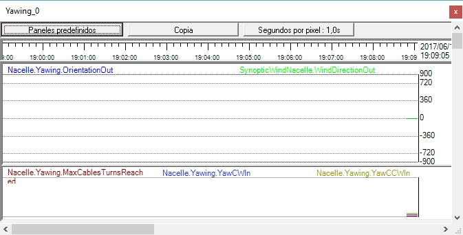

La siguiente figura muestra el panel denominado 'Yawing', que contiene 2 canales.

1.En el primer 'canal' se presentan dos señales:
1.La dirección del viento.
Señal "SynopticWindNacelle.WindDirectionOut". El valor de esta señal está entre 0º y 360º
2.La orientación de la Góndola
Señal "Nacelle.Yawing.OrientationOut". El valor de esta señal puede estar entre -900 y 900, para tomar en cuenta el número de vueltas de los cables de potencia.
2.En el segundo 'canal' se presentan tres señales digitales correspondientes a:
1.La señal de activación del fin de carrera asociado a los cables de potencia, que se activa cuando se ha llegado al máximo absoluto del numero de vueltas, en cualquiera de las dos direcciones.
2.La señal de activación del motor de giro a derechas de la Góndola (CW).
3.La señal de activación del motor de giro a izquierdas de la Góndola (CCW).